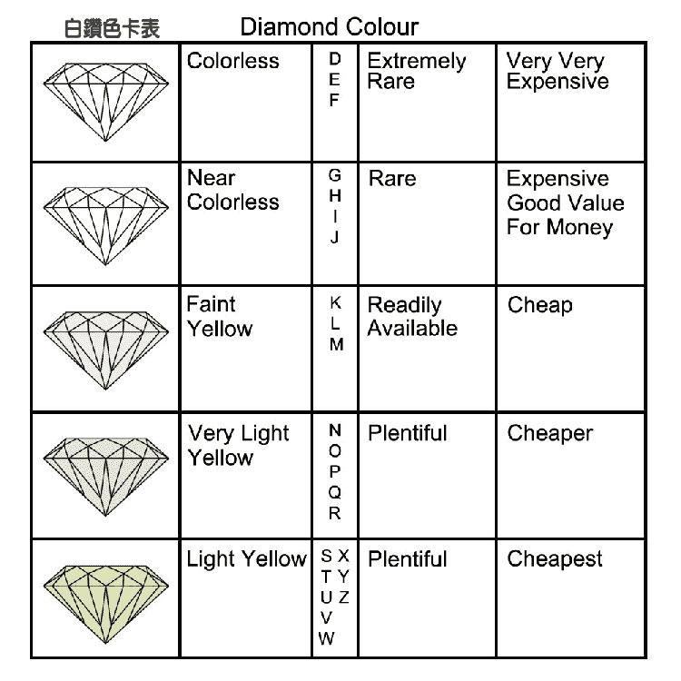
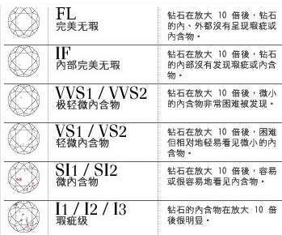
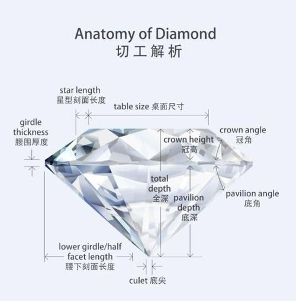
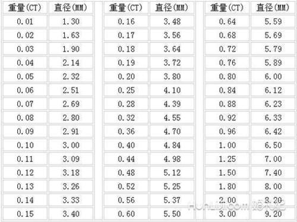

钻石最常见的颜色是无色透明至浅黄色，绝大多数首饰级钻石均为这一颜色系列。钻 石的无色透明在习惯上称之为“白”，在国际钻石贸易中对钻石颜色的描述大都使用这种 方法。此外在许多钻石分级的专著中亦都采用“极白”、“优白”等词汇来描述钻石的颜色。 应该说明的是这里所说的“白”与人们通常理解的“白”有所不同。简单地说，当白 光照到物体上，没有发生任何吸收作用而全部被反射出来时，肉眼所见的颜色就是白色， 例如，我们看到的白纸、白墙等；而当一束白光照到物体上，没有发生吸收和反射作用， 白光全部透过物体，这时人们肉眼所见的颜色就是无色透明，这也正是钻石最常见颜色。 因此用来描述钻石颜色的“白”与通常所说的白在成色机理上是不同的。 除无色透明至浅黄色外，钻石也可有许多种颜色，品质达到首饰级的有色钻石被称为 彩色钻石(Fancy color diamond)。
16 世纪前，钻石的品质是根据重量和形态划分的，颜色和净度不在考虑之列。巴西 钻石的发现，使人们意识到内含物和颜色对钻石的影响。20 世纪初随着南非钻石的大量 发现，巴黎将钻石的净度分为肉眼不可见“镜下无暇”(1oupe—clean)和放大镜下可见“有 瑕”(pique)两个级别。1953 年美国珠宝学院李迪克先生提出了一套 9 个等级的钻石分级体 系方案：FL、VVS1、VVS2、VS1、VS2、SI1、SI2、I1、I2，1970 年又增添了 IF、I3 两个级 别；与此同时，欧洲类似的钻石分级体系相继出台，分为 LC、VVS1、VVS2、VS1、VS2、 SI1、SI2、 P1、P2、P3 巧共 10 个级别，并提出以中性词“内含物”(inclusions)取代“瑕疵” (imperfect)这一贬义词，逐渐建立起现代净度分级体系。 钻石的净度分级的概念：在 10 倍放大镜下，对钻石的内部和外部特征进行等级划分。 即系统全面观察钻石，找出净度特征(内含物)，根据其位置大小、数量、可见度和对钻石 美观、寿命的影响，最后定出钻石净度级别的过程。
切工在钻石的品质评价中同样占有重要的地位，钻石的美丽除了颜色、净度等自身的因 素外，更多的取决于人们对钻石精良的切割，才能充分地展示出钻石好的亮度、火彩和闪烁， 使钻石璀璨夺目。 钻石是人类迄今所发现的最坚硬的材料，发现于公元前4 世纪的印度。钻石曾经象征着 至高无上的权利，人们对其充满了敬畏，不敢进行加工。直到 14 世纪中叶，欧洲和印度的 工匠们才开始对钻石进行加工。 尖琢型(point cut)是钻石的最早抛磨形态，仅限于将八面体的 8 个晶面磨光滑，磨削量 很少，故又可称之为结晶体琢型(如图 3—1-91(a))。 桌形琢型(table cut)出现于 15 世纪中至末期，一直沿用到 17 世纪。该琢型是在尖琢型 基础简单地磨掉八面体的一个角顶而成(如图 3-1-91(b))。 玫瑰琢型(rose cut)从 16 世纪初开始出现，一直盛行至 19 世纪。为平底、拱顶，顶部为 小的三角形小面覆盖，如图 3-1-91(c)所示。这种琢型的效果令人赏心悦目，重量损失小， 而且扁平晶体也可制成玫瑰琢型。其缺点是火彩不足。
在钻石的 4C 分级中最重要而又最简单的就是质量分级。通常以直接称量为准。 1．钻石的质量单位 1)克(g) 是我国法定计量单位，钻石的质量用“克”来表示时，要求精确到 0．0001g. 2)克拉(ct) 是国际通用的的宝石质量单位，源于地中海杨槐树(Carab)的干果。因 为这种干果每颗重量都非常相近，约 0．205g，所以过去被人们用做称量钻石的砝码。1914 年，由法国国家度量衡局长乔姆提出 lct 为 200mg。故有： 1ct=200mg=0．2g lg=5ct 抛光钻石的质量用“克拉”来表示时，要求精确到小数点后两位，第三位八舍九人。如 0．998ct 应记为 0．99ct;而 0．999ct 则可记为 1．00ct。 3)分(pt) 是国际通用的的宝石质量单位，多用于小于 lct 钻石质量的计量。 1ct=100pt 4)格令(grain) 是国际通用的宝石质量单位，主要用于钻石批发中。
